01 / Light Gable
A broad roofline, an open threshold and one warm window.
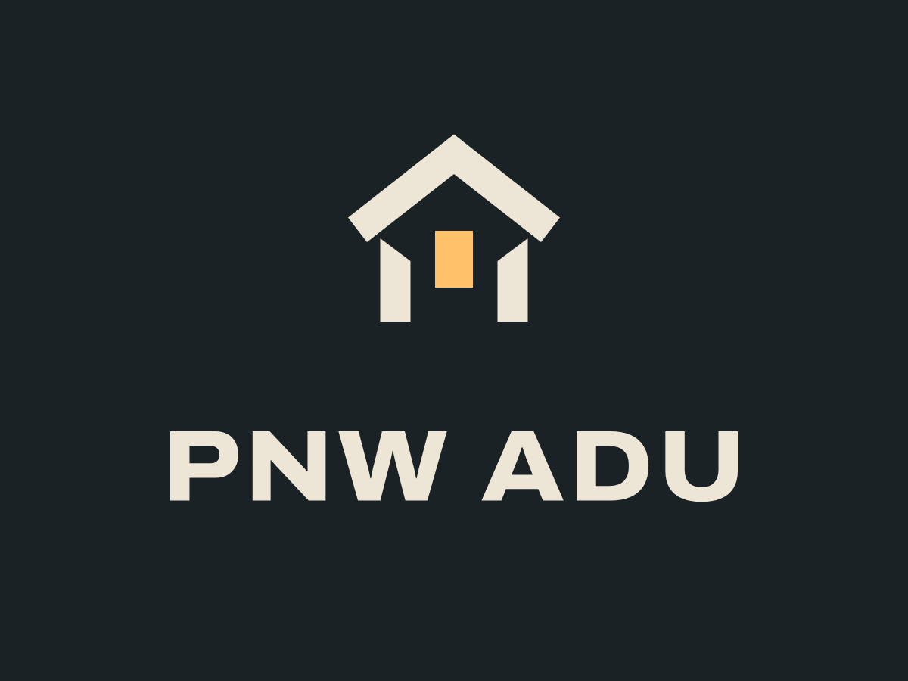
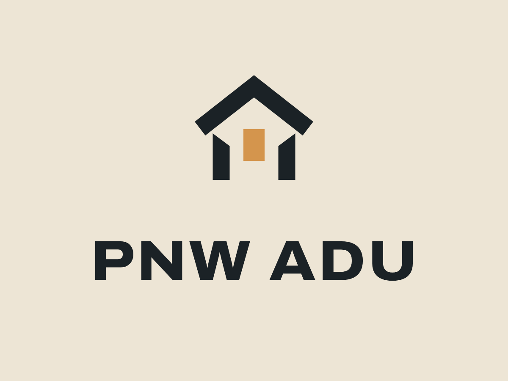
Archivo 800 / width 112. All lettering is outlined in the SVG sources.
Concepts for review; no website logo has been replaced.
A broad roofline, an open threshold and one warm window.


Two spaces of different sizes meet along one structural wall.
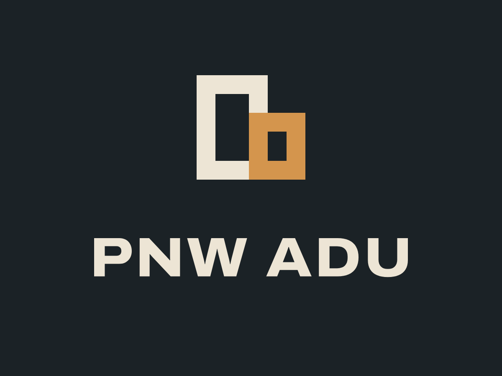
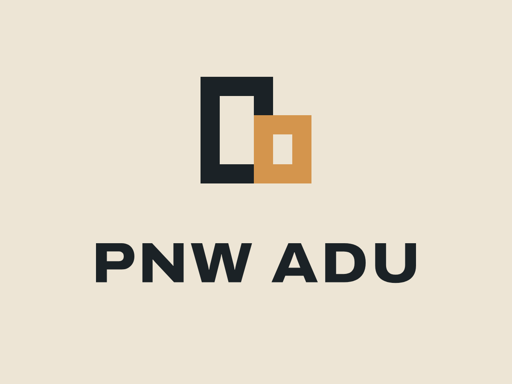
Two cut timbers interlock; the empty center is the extra room.
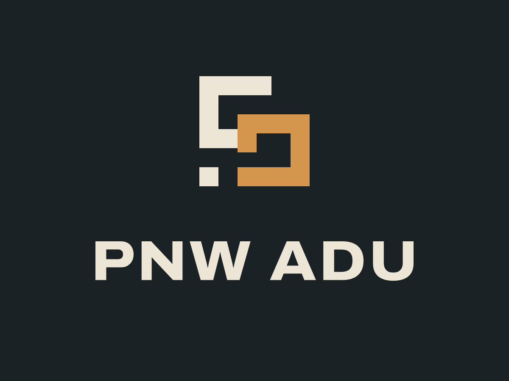
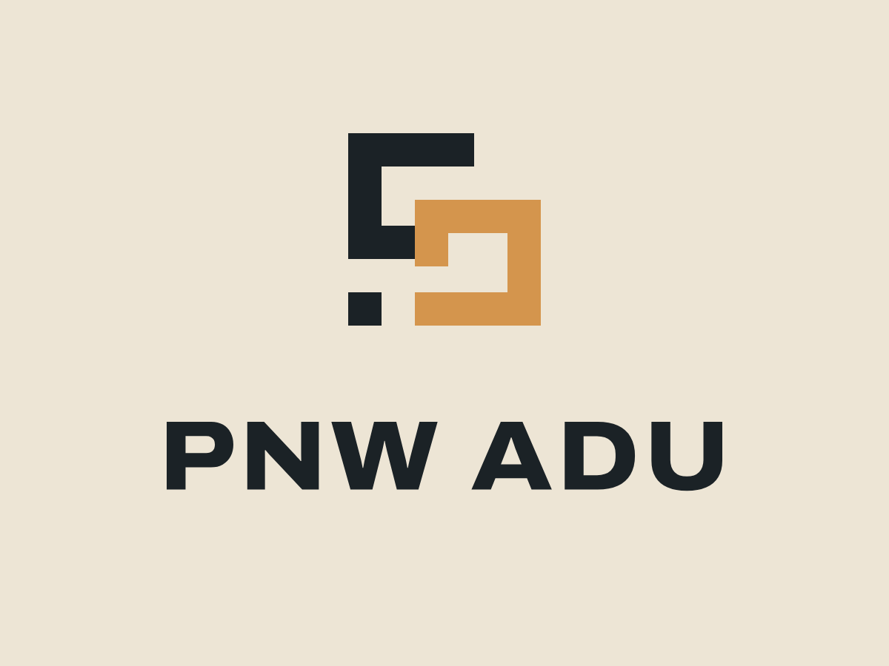
An open floor plan draws the eye from the main space into the addition.
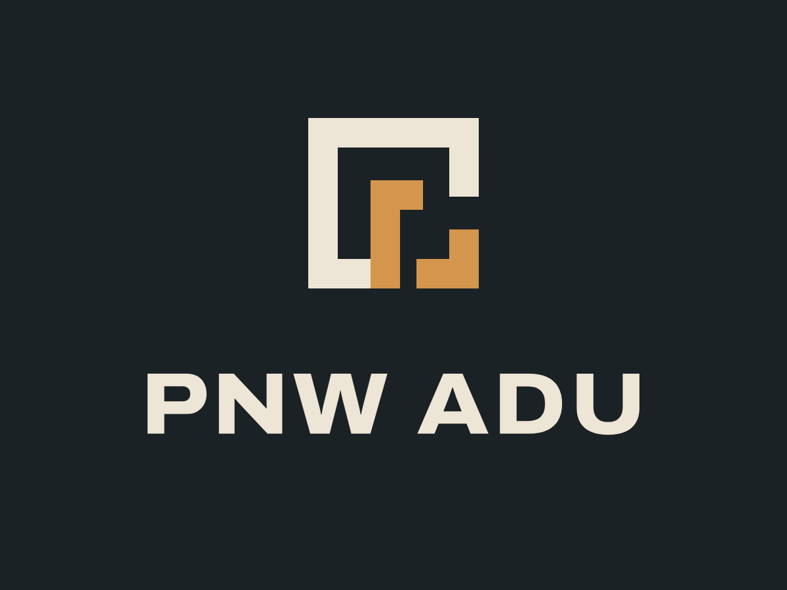
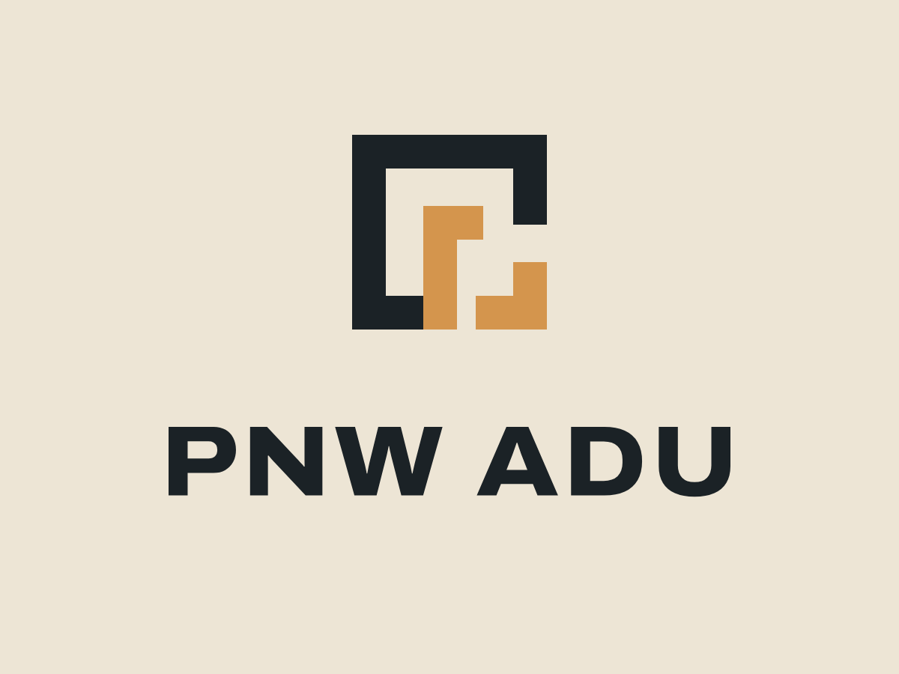
A compact P and A share the rhythm of two load-bearing frames.
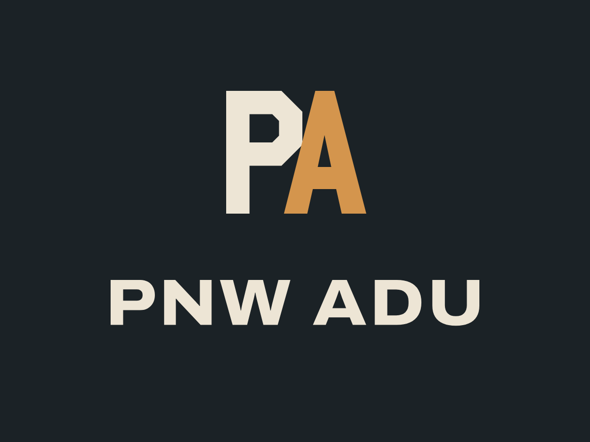
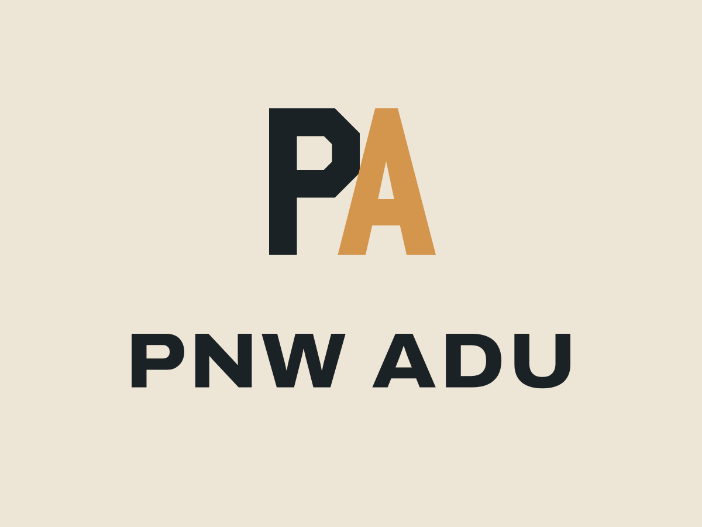
An N-to-U ribbon wraps around a single lit window.
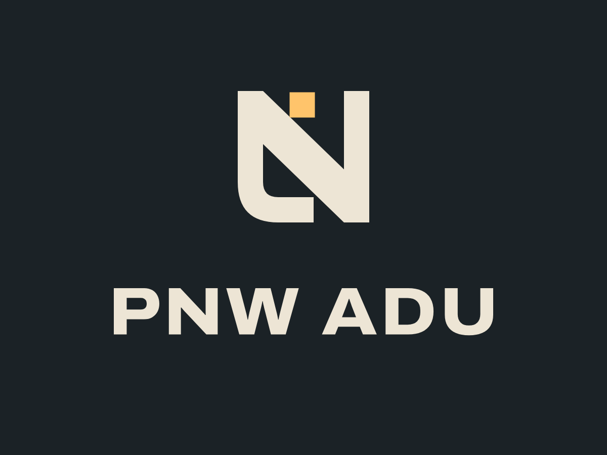
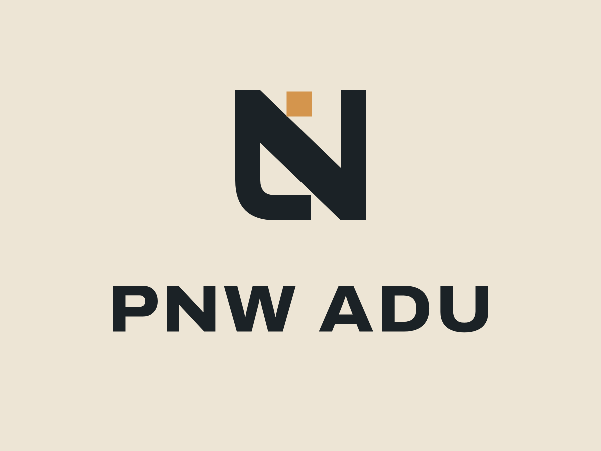